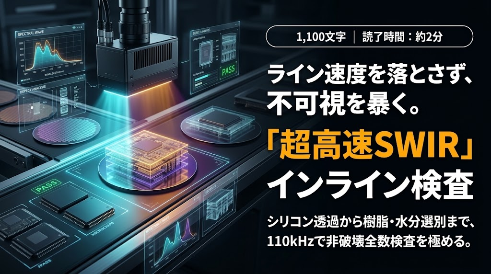

厳選ニュース / 活用トピックス
01.【近赤外・3D実装】 従来比2倍以上の高速検査を実現した近赤外線ウェーハ検査装置「INSPECTRA® IR-X」を販売開始 (2026年11月17日)
東レエンジニアリング先端半導体MIテクノロジーは、MEMSや接合ウェーハ、ハイブリッドボンディング向けに従来比2倍以上の高速検査を実現した近赤外線ウェーハ検査装置「INSPECTRA® IR-X」を発売しました。シリコン内部の欠陥透視に加え、表・裏面の外観検査との併用にも対応しています。
なぜ重要か：
- ハイブリッドボンディングの歩留まり担保： AI半導体やHBMのウェーハ直接接合で致命傷となる接合界面の微小ボイドや剥離を、シリコン透過の赤外線で高速・全数検査できます。
- 表裏面と内部の統合検査によるタクト短縮： 1台の装置で表面・裏面外観検査と赤外線内部透視を併用でき、量産ラインの設備占有面積と搬送工程を大幅に削減します。
02.【最先端微細化・高速化】 日立ハイテクとZEISS、2nm世代向け次世代マルチビーム電子線ウェーハ欠陥検査装置の共同開発を加速 (2026年9月30日)
日立ハイテクと独ZEISS SMTは、2nmノード量産およびHigh-NA EUV時代の10nm以下の微小欠陥を従来比数十倍の速度で検査する次世代マルチビーム電子線ウェーハ欠陥検査装置の共同開発を強化しました。日立ハイテクの300mmインライン基盤・AI解析技術と、ZEISS SMTの91ビーム多重カラム技術「MultiSEM」を統合します。
なぜ重要か：
- 光学検査の分解能限界と電子線の速度限界を同時突破： 光学式では困難な10nm級欠陥の捕捉と、従来の単一電子ビームの速度課題を、マルチビーム化とAI解析により量産タクトレベルで両立します。
- 確率的欠陥（ストキャスティック欠陥）の早期把握： EUV露光特有のランダムな微細欠陥を早期に特定・フィードバックし、最先端ロジック・メモリの立ち上げ歩留まりを飛躍的に高めます。
03.【パワー半導体・潜在欠陥】 東京エレクトロン デバイスとアイテス、UVレーザーでSiCウェーハの潜在欠陥を可視化する「ITS-SCX100」を開発 (2026年4月14日)
東京エレクトロン デバイスとアイテスは、UVレーザー照射で通電劣化を再現し、SiC（炭化ケイ素）ウェーハ内部の潜在的な基底面転位（BPD）などの結晶欠陥を拡張・可視化する検査装置「ITS-SCX100」を共同開発しました。
なぜ重要か：
- デバイス化前の「ウェーハ段階」で潜在不良を遮断： チップ製造後の通電試験を待たずにウェーハ段階で潜在欠陥を早期スクリーニングでき、材料評価のリードタイムとコストを圧縮します。
- EV・産業インフラ向け高信頼パワー半導体の品質保証： 実稼働中の通電劣化を引き起こす潜在結晶欠陥をウェーハレベルで選別し、高耐圧SiCデバイスの長期信頼性を担保します。
ピックアップ製品・ソリューション
NIT LiSa SWIR 2048
110kHz超高速ラインレートと高感度InGaAs透過撮像で、半導体ウェーハ内部欠陥をインライン全数検査するSWIRカメラ

なぜ重要か：
- 高速透過スキャンによる全数インライン検査の実現： 最高110kHz超の高速ラインスキャンと高感度InGaAsセンサーにより、量産ラインのタクトタイムを一切落とさずにシリコンウェーハ内部のボイド・剥離を非破壊で全数透視できます。
現場課題への解決アプローチ：
- 3D実装・ハイブリッドボンディングの内部ボイドを非破壊透視： シリコンを透過する900〜1700nmのSWIR波長帯域と2048画素の高分解能により、接合界面の微小ボイドや層間クラックを高コントラストで捕捉します。
- 110kHz超の超高速ラインレートで検査タクトを大幅短縮： 毎秒11万ライン超の高速撮像と高ダイナミックレンジ（低読出ノイズ <90e-）を両立し、300mmウェーハのインライン全数スクリーニングにおける速度ボトルネックを解消します。
- 装置組み込みを容易にするコンパクト設計とオンボード補正： 35.4×75.0×68.0mmの小型筐体に加え、リアルタイムNUC（不均一性補正）・BPR（不良画素置換）やCamera Link/GenICam準拠により、既存のウェーハ外観・内部検査装置へ即座に統合可能です。
| 製品モデル |
LiSa SWIR 2048（New Imaging Technologies社製 / LYNREDグループ） |
| 搭載センサー |
自社製 高感度InGaAsリニアラインスキャンセンサー（NSC2301） |
| 有効画素数 / ピッチ |
2048 × 1 画素 / 8 µm × 14 µm（高感度矩形画素） |
| 感度波長帯域 |
短波長赤外（SWIR） 900 nm 〜 1700 nm |
| 最大ラインレート |
> 110 kHz（フル解像度 2048画素時） |
| 読み出しノイズ |
< 90 e-（超低ノイズ・高ダイナミックレンジ） |
| 読み出しモード |
ITR（Integrate-Then-Read） / IWR（Integrate-While-Read）対応 |
| 画像補正機能 |
リアルタイムNUC（不均一性補正）、BPR（不良画素置換）オンボード搭載 |
| レンズマウント |
Cマウント、M42マウント（標準1.1インチ光学系に適合） |
| インターフェース |
Camera Link（Base / Medium）、GenICam準拠 |
| 外形寸法 |
35.4 mm × 75.0 mm × 68.0 mm（超コンパクト堅牢筐体） |
| 主要適用分野 |
ハイブリッドボンディング・3D実装内部ボイド検査、Si/MEMS接合ウェーハ透過検査、太陽電池評価 |